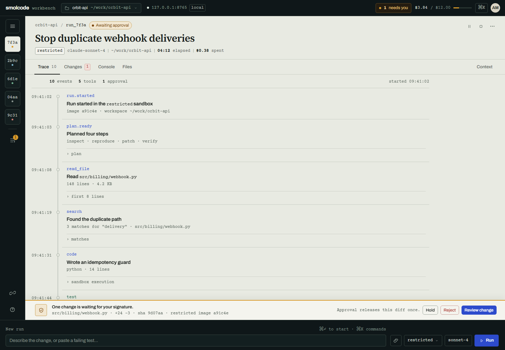

The shell changed.
Cuebook, Custody, and Bonded were three worlds on the same dashboard. Top navigation, a left pane, a summary strip, a table of runs, a right-hand card stack, and a modal approval. The palettes were different. The product model was not.
Round three starts from the run instead: one stage, one trace spine, one gate bound to the diff, and drawers for everything that is navigation rather than work. This is a structural change, not another skin.

What changed in the skeleton
- No permanent three panesThe old 320 / 1fr / 360 shell is gone. The rail is navigation; the stage is the work.
- Trace is the home screenNot a log tab behind a table. The run's evidence is the primary surface.
- Approval is a gate, not a modalThe dock names the diff, sha, tier, and image before releasing it.
- Everything else is a drawerRuns, launch, audit, context, and queue stay temporary and keyboard-reachable.
Why round two failed
Same IA
The three worlds changed type, palette, and metaphor, but kept the same navigation, summary band, run table, and inspector. A different skin on one skeleton reads as one design.
No product object
smolcode's unit is a run. In the old shell, a run was a row and a selected detail; the page was still organised around the dashboard.
Chrome won
Plan, composer, inspector, and stats were permanent, so the evidence had to compete for space. The review surface could never be the main thing.
The new contract
Archived round two
Sources
Claude Code desktop redesign and docs · OpenAI Codex app · Cursor Agents Window · Beamline Run trace · Mandatum · Viden · agent progress trace · agent UI best practices.